Kunskap i Copilot Studio – på djupet
I kursen lärde vi oss lägga till kunskap via dokument och webbsidor. Men hur fungerar det egentligen bakom kulisserna? Och vad gör man när den vanliga kunskapssökningen inte räcker?
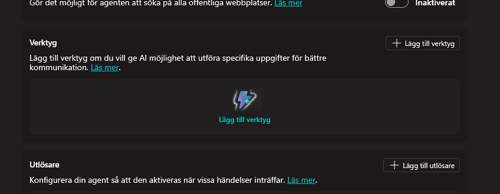
Steg 1: Vad händer när du laddar upp ett dokument?
Innan vi pratar om hur sökningen fungerar måste vi förstå vad som händer redan när du lägger till ett dokument som kunskap.
När du laddar upp en fil (Word, PDF, etc.), startar en process som kallas indexering:
flowchart LR
A["📄 Ditt dokument"] --> B["✂️ Delas upp i delar (chunks)"]
B --> C["🔢 Varje del omvandlas till vektorer (embeddings)"]
C --> D["🗄️ Sparas i en vektordatabas"]-
Dokumentet delas upp i mindre textdelar (chunks). Tänk dig att en 10-sidig PDF klipps i ~20-30 bitar. Ofta överlappar dessa delar varandra något, det kallas overlapping, för att viktig information som råkar hamna precis vid en klippgräns inte ska gå förlorad.
-
Varje del omvandlas till en vektor av en speciell typ av AI-modell som kallas embedding-modell. Denna modells enda uppgift är att analysera textstycken och representera deras betydelse som en matematisk vektor i ett rum med hundratals eller tusentals dimensioner.
En vektor kan se ut ungefär så här:
Denna kan ha över 1 000 dimensioner – långt bortom vad vi kan visualisera. Det smarta är att ord som "laptop" och "bärbar dator" hamnar nära varandra i detta vektorrum, trots att de är helt olika rent teckenmässigt. Det är för att deras innebörd och betydelse är likartad – och det är just betydelsen som modellen fångar.[0.23, -0.87, 0.45, 0.12, ..., -0.33, 0.91, 0.05] -
Vektorerna sparas i en vektordatabas som agenten sedan kan söka i.
Det är dessa sparade vektorer som användarens frågor sedan matchas mot.
Dokument uppdateras inte automatiskt
Om du ändrar innehållet i ett dokument som redan är uppladdat uppdateras inte kunskapsbanken automatiskt. Du måste:
- Ta bort det gamla dokumentet från kunskapskällorna.
- Ladda upp den nya versionen igen.
Annars kommer agenten fortsätta svara baserat på den gamla versionen av filen.
Steg 2: Hur RAG fungerar (sökningen)
När du lägger till ett dokument som kunskap i Copilot Studio använder Microsoft en teknik som heter RAG – Retrieval-Augmented Generation.
I korthet fungerar det så här:
flowchart TB
A["🗣️ Användaren ställer en fråga"] --> B["🤖 Agenten omformulerar frågan"]
B --> C["🔢 Frågan vektoriseras"]
C --> D["🔍 Matchas mot textdelar i kunskapsbanken"]
D --> E["📄 Relevanta delar skickas till LLM"]
E --> F["💬 Agenten formulerar ett svar"]- Användaren ställer en fråga i chatten (eller via en trigger).
- Agenten omformulerar frågan utifrån vad den uppfattade att användaren menade.
- Frågan vektoriseras – omvandlas till en matematisk representation.
- Matchning mot kunskapsbanken – de semantiskt närmaste delarna (chunks) av dina dokument hittas.
- Relevanta delar skickas till LLM som bygger ett svar baserat på den hämtade texten.
Vill du förstå RAG på djupet?
Kolla in denna förklaringsvideo: RAG Explained (YouTube)
Begränsningar i Copilot Studio
Microsoft specificerar inte exakt hur deras RAG-implementation fungerar gällande:
- Chunking – hur dokumenten delas upp i delar
- Overlapping – om delarna överlappar varandra
- Antal chunks – hur många delar som hämtas per fråga
Det går inte heller att konfigurera dessa parametrar. Vad man kan se baserat på Microsofts dokumentation är att det oftast returneras ungefär tre chunks per dokumentfråga.
När fungerar kunskapssökning bra?
Kunskapssökning (RAG) är bäst på att hitta nålar i en höstack – att svara på konkreta, specifika frågor.
Fungerar bra: ✅
- "Vilka tider har supporten öppet?"
- "Vad kostar Surface Laptop 13?"
- "Vad händer om jag tappar min jobbtelefon?"
Fungerar sämre: ⚠️
- "Sammanfatta hela dokumentet"
- "Jämför alla produkter och ge mig den bästa"
- Frågor som kräver att agenten ser hela dokumentet på en gång
Samband och jämförelser
RAG kan ibland hitta samband mellan olika delar av ett dokument – men det är mycket beroende av datan och hur den är strukturerad. Ju tydligare och mer avgränsar dina dokument är, desto bättre fungerar sökningen.
Flera iterationer med resonerande modeller
Normalt kör agenten bara en iteration av kunskapssökningen. Den ställer sin fråga, får tillbaka chunks, och formulerar ett svar.
Men om du använder en resonerande modell (reasoning model) kan agenten göra flera frågor mot kunskapsbasen om den inte känner att den fick tillräckligt med information vid första försöket.
Styr via instruktioner
Du kan påverka detta beteende genom agentens beskrivning och instruktioner. Till exempel kan du instruera agenten att "söka i kunskapen flera gånger om svaret är otydligt" för att öka chansen att hitta rätt information.
Alternativ: Hämta hela dokumentet via ett verktyg
Ibland räcker det inte med RAG. Om agenten behöver se hela dokumentets innehåll – t.ex. för att sammanfatta, jämföra produkter, eller svara på breda frågor – kan du skapa ett verktyg som hämtar hela filen.
Viktigt: Bara textfiler fungerar direkt
Denna metod fungerar bra för .txt-filer eftersom den underliggande datan är ostrukturerad text. Men kör du samma teknik på en .docx-fil får du bara obegriplig binär ZIP-data, och för en .pdf får du PDF-källkod blandat med komprimerade dataströmmar.
Detta beror på att Word-filer egentligen är ZIP-komprimerade samlingar av XML-filer, och PDF är ett kompilerat binärformat. Ingen av dem returnerar ren läsbar text direkt.
Vill du använda Word eller PDF? Se avsnittet Dynamisk hämtning av flera dokument längre ner.
Steg-för-steg: Skapa ett Agentflöde för heldokumenthämtning
1. Skapa flödet
-
Klicka på Verktyg i menyn och sedan på + Lägg till.

-
Välj Agentflöden för att skapa ett nytt agentflöde.
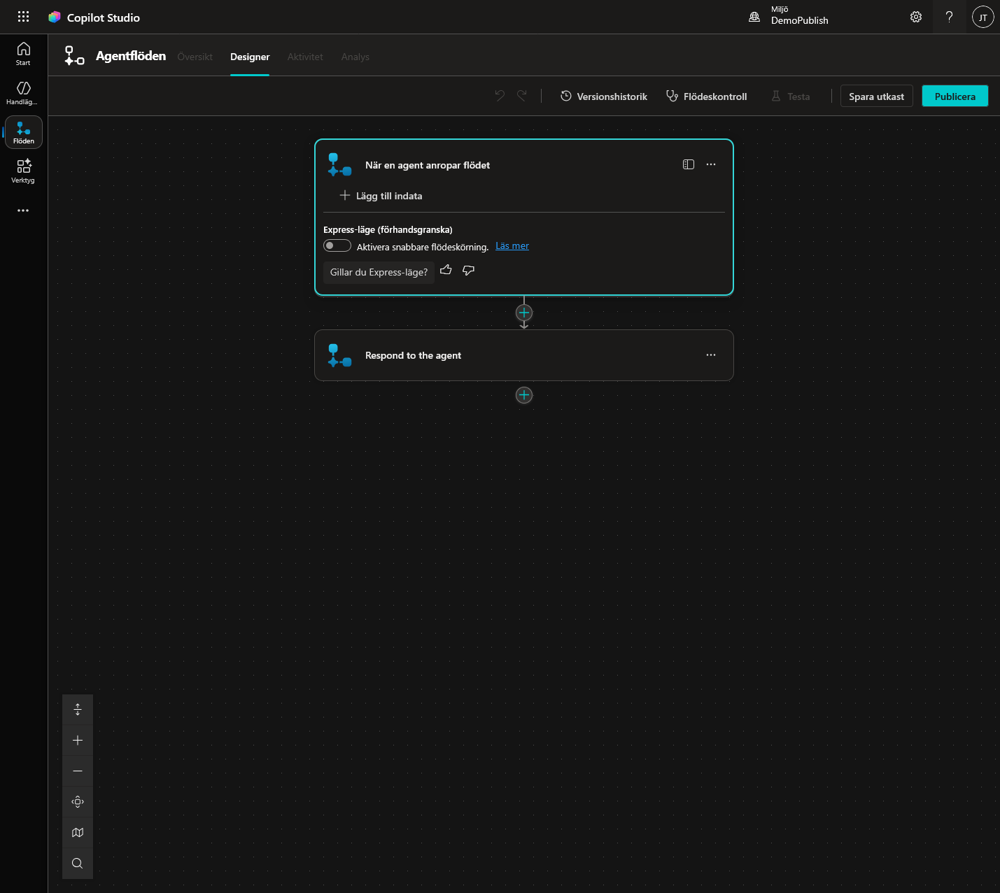
-
Du ser två noder:
- När en agent anropar flödet (Indata)
- Respond to the agent (Utdata)
-
Viktigt: Lägg inte till några indataparametrar. Flödet ska alltid hämta samma fil – ingen input behövs.
2. Lägg till "Hämta filinnehåll"
-
Klicka på plus-tecknet (+) mellan de två noderna.

-
Sök efter Hämta filinnehåll – välj SharePoint- eller OneDrive-varianten beroende på var din fil ligger.
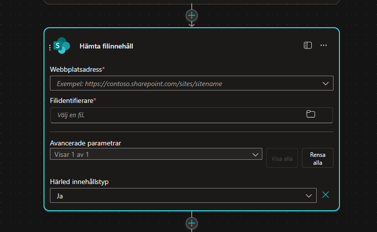
-
Konfigurera noden:
-
Webbplatsadress: Välj din SharePoint-sida.
-
Fil: Navigera till den specifika filen du vill hämta.

-
3. Konfigurera utdata
-
Klicka på noden Respond to the agent.
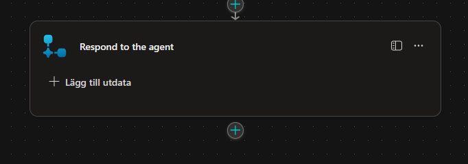
-
Klicka + Lägg till utdata → Text.
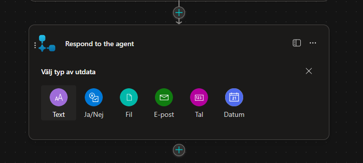
-
Döp utdatan till ett passande namn, t.ex.
innehåll. -
Klicka på fx-symbolen (Infoga uttryck).
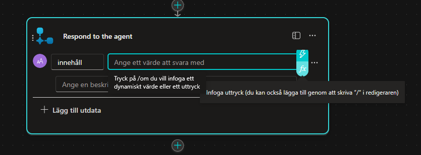
-
Skriv in följande uttryck:
body('Hämta_filinnehåll')Detta hämtar själva textinnehållet från filen – det som agenten sedan kan läsa och analysera.
-
Klicka Lägg till.
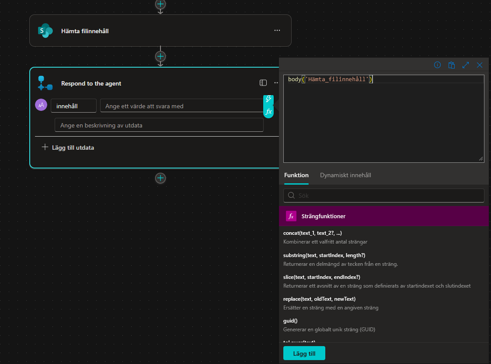
4. Spara och publicera
-
Klicka Spara utkast.
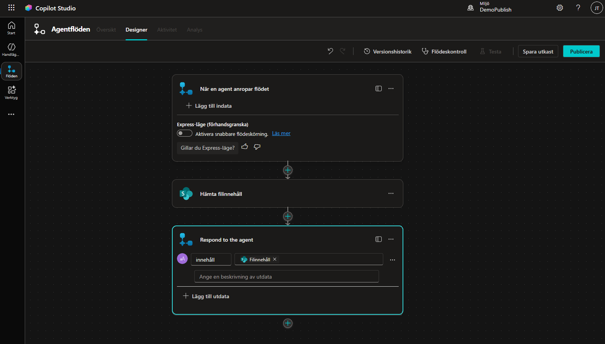
-
Klicka på Översikt (till vänster om flödesnamnet).
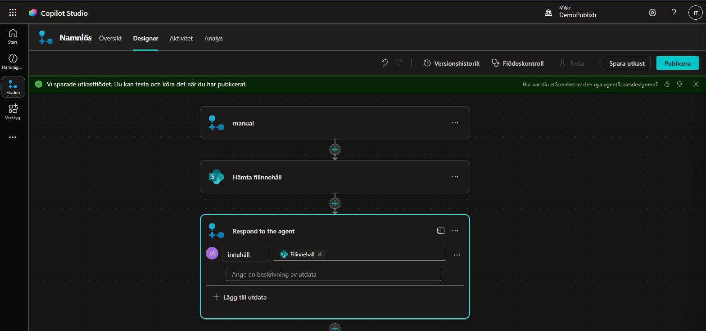
-
Klicka Redigera under Detaljer.

-
Ge flödet ett passande namn, t.ex.:
Produktinformation -
Skriv en beskrivning, t.ex.:
Detta flöde används för att hämta och ge tillbaka all text som finns gällande företagets produktinformation. -
Klicka Spara.
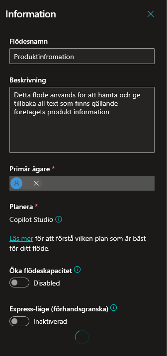
-
Gå tillbaka till Designer och klicka på Publicera.
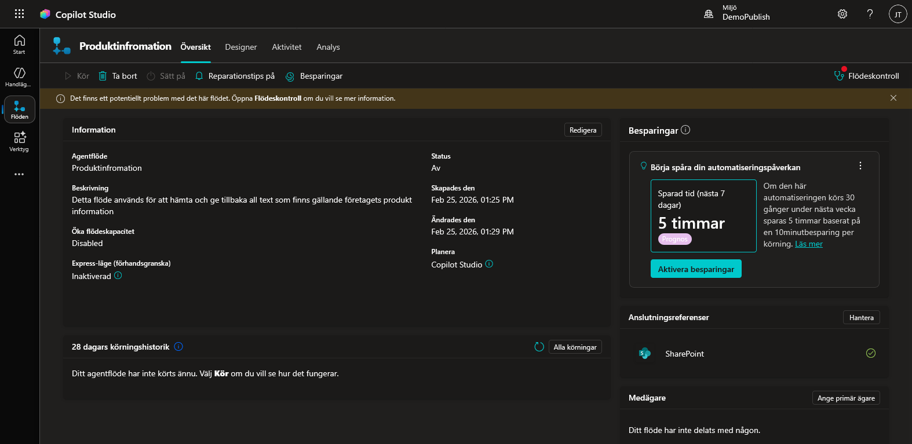
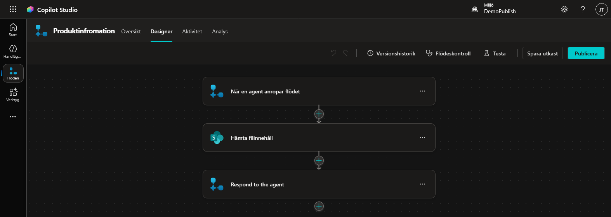
-
Om allt fungerar får du en grön bekräftelseruta.
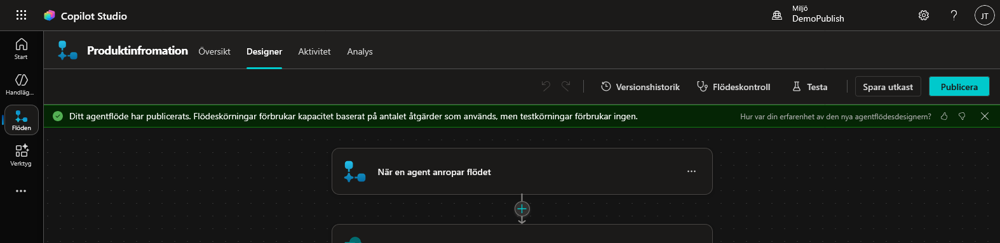
5. Lägg till som verktyg i agenten
- Navigera till din agent.
-
Klicka på Lägg till ett verktyg → Agentflöden.
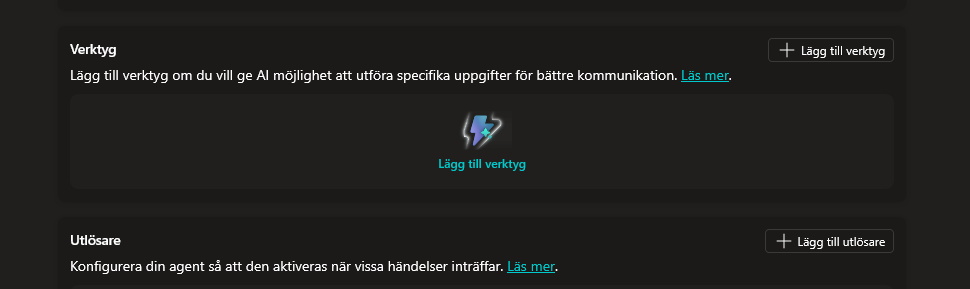
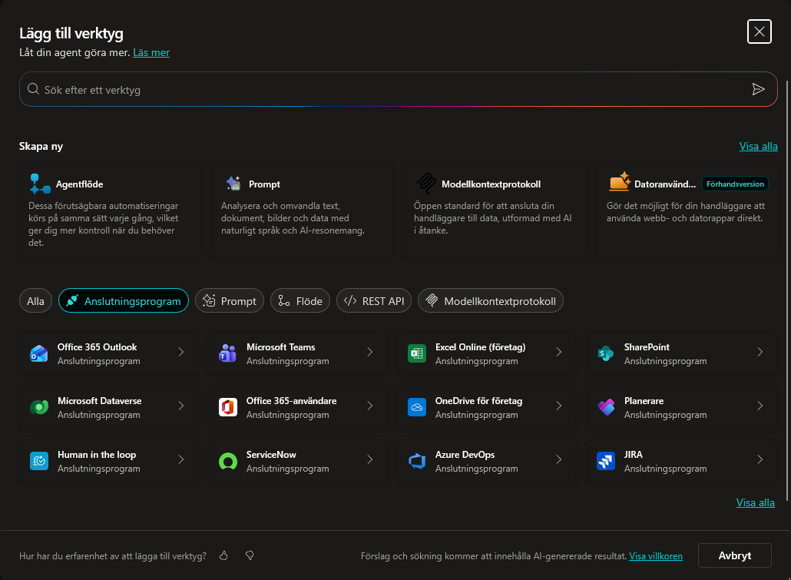
-
Välj ditt nyligen skapade flöde (Produktinformation).

-
Klicka Lägg till och konfigurera.
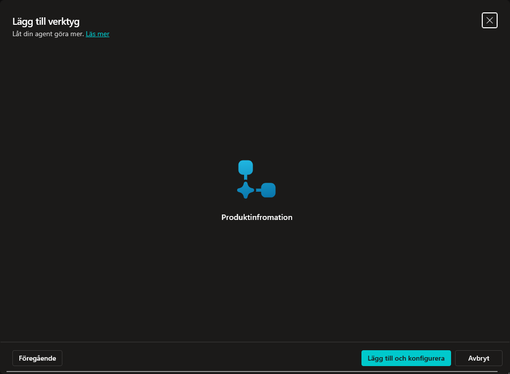
-
Kontrollera att namn och beskrivning stämmer:
- Namn:
Produktinformation(bör redan vara ifyllt) - Beskrivning:
Detta verktyg genererar hela texten för företagets produktinformationsdokument.

- Namn:
-
Spara verktygskonfigurationen.
6. Uppdatera agentens instruktioner
- Gå till Översikt.
- Klicka Redigera vid Instruktioner.
-
Lägg till:
- Använd verktyget /Produktinformation för att se all information om företagets produkter.(Kom ihåg att välja verktyget från popupmenyn så att det blir en aktiv länk.)
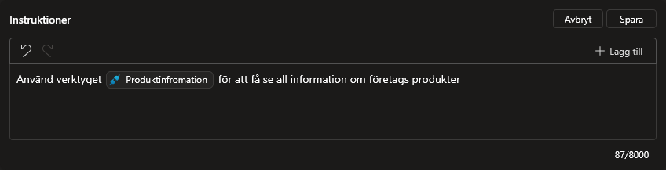
-
Klicka Spara.
Jämförelse: RAG vs Heldokumentverktyg
| RAG (Kunskap) | Heldokument (Verktyg) | |
|---|---|---|
| Bäst för | Specifika frågor | Breda frågor, sammanfattningar |
| Dokumentstorlek | Stora dokument fungerar bra | Begränsas av kontextfönstret |
| Konfiguration | Ingen – automatisk | Kräver agentflöde |
| Kostnad | Låg (liten mängd text) | Högre (hela dokumentet skickas) |
| Flera dokument | Söker i alla samtidigt | Ett flöde per fil (statisk) |
Dynamisk hämtning av flera dokument
Metoden ovan fungerar utmärkt för en specifik fil. Men vad händer om du vill att agenten ska kunna välja vilken fil den hämtar?
Detta kräver lite mer konfiguration – du behöver:
- Lägga till en indataparameter i flödet (t.ex. filnamn eller fil-ID).
- Använda dynamiskt innehåll i Hämta filinnehåll-noden istället för en fast fil.
- Låta agenten först identifiera vilka filer som finns tillgängliga med hjälp av en nod som Lista Rotmappen som visar innehållet i en SharePoint-mapp.
Begränsning: Filformat
Denna teknik fungerar direkt för text-baserade filer (.txt, .md).
För Word-dokument (.docx) och PDF-filer krävs preprocessing innan texten kan läsas – eftersom dessa format inte är ren text utan komprimerade binärformat (se varningen ovan). Alternativ:
- Manuell konvertering: Spara ditt Word-dokument som .txt-fil innan du laddar upp det.
- Verktyg: Använd externa verktyg eller skript för att konvertera PDF → text.
- Azure AI Document Intelligence: För mer avancerade flöden kan du använda Azure-tjänster som automatiskt extraherar text ur Word och PDF. Mer om detta kommer i framtida artiklar.
Bilder och inskannade dokument
Det är viktigt att veta att varken RAG-kunskapen eller heldokumentverktyget kan "se" bilder i dina dokument. Om ditt dokument innehåller diagram, tabeller som bilder, eller är ett inskannat dokument (t.ex. en scannad PDF) kommer agenten inte att kunna läsa det innehållet.
För inskannade dokument krävs OCR (Optical Character Recognition) som ett förbearbetningssteg – t.ex. via Azure AI Document Intelligence – innan texten kan användas som kunskap.
Tumregel
- Få, specifika frågor → RAG (Kunskap) räcker
- Behöver se helheten → Skapa ett verktyg
- Blandat → Använd båda! RAG för snabba svar, verktyg för djupgående analys
- Word/PDF → RAG fungerar (ladda upp), heldokumentverktyg kräver konvertering
- Bilder/skannat → Kräver preprocessing (OCR)